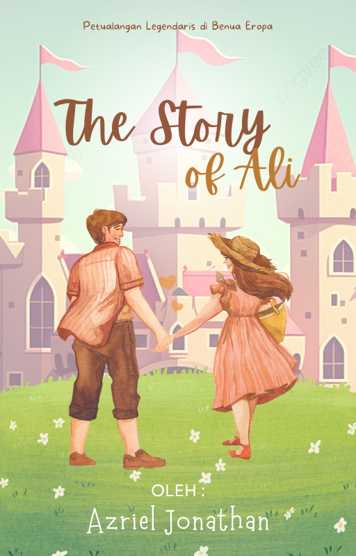

Cerita ini mengikuti petualangan Ali, seorang pemuda dari Jerman, yang meninggalkan desanya untuk menjelajahi Benua Eropa. Bersama dengan mentor pedangnya, Romain, Ali menjalani perjalanan epik di seluruh Eropa, menghadapi musuh-musuh jahat, memecahkan teka-teki kuno, dan mencari cintanya, Noelle. Dalam pencarian untuk mengambil kembali cincin peraknya, Ali memimpin pertempuran-pertempuran epik yang mengubah nasib kerajaan-kerajaan Eropa. Cerita ini adalah kisah petualangan, cinta, dan pengorbanan yang menarik di lanskap indah Benua Eropa.
|  | |
| Judul | The Story Of Ali | Genre | Petualangan, Sejarah, Romansa | Penulis | Azriel Jonathan | Status | Ongoing | Umur Pembaca | 12 Tahun (Minimal) |
Ali, seorang pemuda berusia 18 tahun, lahir dan dibesarkan di sebuah desa kecil di tepi Sungai Rhine di Jerman. Desa itu dikelilingi oleh hutan-hutan hijau yang penuh misteri. Ali selalu merasa bahwa dunia ini lebih besar daripada apa yang bisa ditemui di desanya. Suatu hari, ketika matahari terbenam dan langit penuh bintang di langit Eropa, dia membuat keputusan besar. Dia akan meninggalkan desanya dan menjelajahi benua Eropa yang luas.
Dalam perjalanan pertamanya, Ali tersesat di dalam hutan Ardennes yang lebat di Belgia. Dia mendengar suara gemuruh yang jauh dan segera menuju ke arah itu. Di tengah hutan, dia menemukan seorang pendekar pedang Belgia terluka parah. Dengan cepat, Ali memberikan pertolongan pertama dan merawat luka pendekar itu. Pendekar itu bernama Romain, dan dia mengajarkan Ali seni bela diri dan pedang.
Setelah berbulan-bulan berlatih dengan Romain, Ali merasa sudah siap untuk menjelajahi benua Eropa yang bersejarah. Dia tiba di kota tua yang indah di Prancis, di mana bangunan-bangunan kuno berdiri tegak dan sungai Seine mengalir dengan megahnya. Di sana, Ali bekerja sebagai penjaga di kastil bersejarah dan dia mulai mengenal berbagai budaya dan bahasa di Eropa.
Suatu hari, Ali mendengar teriakan minta tolong di lorong-lorong yang sempit di Venesia, Italia. Dia berlari ke sana dan menemukan seorang putri Venesia yang diserang oleh sekelompok penjahat. Ali dengan cepat melindunginya dan mengalahkan penjahat itu. Putri Venesia itu bernama Noelle, dan sebagai tanda terima kasih, dia memberikan Ali cincin perak yang indah.
Ketika Ali dan Noelle sedang berjalan-jalan bersama di jalan-jalan berbatu di Paris, cincin perak itu dicuri oleh sekelompok penjahat licik. Ali merasa sangat marah dan bersumpah akan mengambil kembali cincin itu. Dengan tekad bulat, dia mulai mencari jejak penjahat tersebut melalui gang-gang yang berliku di kota Paris yang kuno.
Ali menyadari bahwa dia perlu meningkatkan keterampilannya jika ingin berhasil dalam pencariannya. Dia mencari seorang guru seni bela diri terkenal di Florence, Italia, seorang maestro seni pedang yang bijaksana bernama Lorenzo. Ali menghabiskan bertahun-tahun belajar di bawah bimbingan Maestro Lorenzo dan menjadi seorang ahli dalam seni bela diri dan seni pedang ala Eropa.
Setelah merasa cukup siap, Ali meninggalkan kota Florence dan memulai perjalanan petualangannya di seluruh Eropa. Dia bertemu dengan berbagai karakter menarik, seperti seorang penyihir yang misterius di Transilvania, seorang pedagang yang cerdik di Istanbul, dan seorang bangsawan yang berjiwa petualang di Spanyol. Setiap petualangan membawanya lebih dekat pada misinya untuk mengambil kembali cincinnya.
Ali akhirnya menemukan bahwa penjahat utama di balik pencurian cincinnya adalah seorang penyihir jahat yang tinggal di sebuah kastil yang angker di Bavaria, Jerman. Penyihir itu bernama Helga, dan dia memiliki kekuatan magis yang luar biasa, dan dia mengancam akan menggunakan cincin Ali untuk tujuan jahatnya.
Ali dan Helga terlibat dalam pertempuran epik di Kastil Neuschwanstein yang terkenal di Bavaria. Ali hampir dikalahkan oleh kekuatan magis Helga, tetapi dengan tekad dan keberanian yang tak tergoyahkan, Ali berhasil menggunakan kekuatan pedang saktinya untuk mengalahkan penyihir itu.
Dengan Helga dikalahkan, Ali mengambil kembali cincin peraknya. Saat dia mengembalikan cincin itu kepada Noelle, cinta di antara mereka tumbuh menjadi sesuatu yang lebih dalam dalam suasana romantis di bawah cahaya bulan di pinggiran Danau Como di Italia.
Ali dan Noelle memutuskan untuk bekerja sama dalam sebuah misi penyelamatan di Inggris. Mereka mengetahui bahwa kerajaan Inggris sedang dalam bahaya karena serangan pasukan pemberontak yang dipimpin oleh seorang pangeran yang haus kekuasaan.
Ali dan Noelle mencapai Inggris dan bergabung dengan pasukan kerajaan dalam upaya penyelamatan. Misi penyelamatan itu berjalan tidak sesuai rencana, dan Ali harus membuat keputusan sulit. Dia memilih untuk menjaga Noelle dan mengorbankan dirinya sendiri, sehingga dia ditangkap oleh pasukan pemberontak dan dikurung di dalam Castel yang angker.
Sahabat-sahabat Ali yang setia dari seluruh Eropa mendengar tentang nasibnya yang tragis dan mereka menyusun rencana penyelamatan daring. Dengan kerjasama dari berbagai negara Eropa, mereka berhasil membebaskan Ali dari penangkapan pasukan pemberontak.
Pertempuran akhir yang epik terjadi antara pasukan Ali dan pasukan pemberontak yang dipimpin oleh pangeran yang haus kekuasaan di Windsor Castle di Inggris. Ali menggunakan semua keterampilan dan kebijaksanaannya untuk memimpin pasukannya dalam pertempuran yang sengit.
Akhirnya, Ali dan pasukannya berhasil memenangkan pertempuran dan menyelamatkan kerajaan Inggris dari ancaman pasukan pemberontak. Kerajaan itu kembali dalam damai, dan Ali hidup bahagia bersama Noelle dalam suasana indah di Swiss.